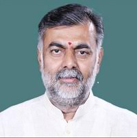

|
Chhattisgarh Tourism |
 श्री नरेंद्र मोदी मान. प्रधानमंत्री |
 श्री भूपेश बघेल श्री भूपेश बघेल मान. मुख्यमंत्री |
श्री प्रहलाद सिंग पटेल मान. पर्यटन मंत्री |
 |
श्री नरेंद्र मोदी
मान. प्रधानमंत्री
नरेन्द्र दामोदरदास मोदी ( जन्म: १७ सितम्बर १९५०) २०१४ से भारत के १४वें प्रधानमन्त्री तथा वाराणसी से सांसद हैं।[वे भारत के प्रधानमन्त्री पद पर आसीन होने वाले स्वतंत्र भारत में जन्मे प्रथम व्यक्ति हैं। इससे पहले वे 7 अक्तूबर २००१ से 22 मई २०१४ तक गुजरात के मुख्यमंत्री रह चुके हैं। मोदी भारतीय जनता पार्टी (भाजपा) एवं राष्ट्रीय स्वयंसेवक संघ (आरएसएस) के सदस्य हैं। वडनगर के एक गुजराती तेली परिवार में पैदा हुए, मोदी ने अपने बचपन में चाय बेचने में अपने पिता की मदद की, और बाद में अपना खुद का स्टाल चलाया। आठ साल की उम्र में वे आरएसएस से जुड़े, जिसके साथ एक लंबे समय तक सम्बंधित रहे। स्नातक होने के बाद उन्होंने अपने घर छोड़ दिया। मोदी ने दो साल तक भारत भर में यात्रा की, और कई धार्मिक केंद्रों का दौरा किया। 1969 या 1970 वे गुजरात लौटे और अहमदाबाद चले गए। 1971 में वह आरएसएस के लिए पूर्णकालिक कार्यकर्ता बन गए। 1975 में देश भर में आपातकाल की स्थिति के दौरान उन्हें कुछ समय के लिए छिपना पड़ा। 1985 में वे बीजेपी से जुड़े और 2001 तक पार्टी पदानुक्रम के भीतर कई पदों पर कार्य किया, जहाँ से वे धीरे धीरे भाजपा में सचिव के पद पर पहुंचे। गुजरात भूकंप २००१, (भुज में भूकंप) के बाद गुजरात के तत्कालीन मुख्यमंत्री केशुभाई पटेल के असफल स्वास्थ्य और ख़राब सार्वजनिक छवि के कारण नरेंद्र मोदी को 2001 में गुजरात के मुख्यमंत्री नियुक्त किया गया। मोदी जल्द ही विधायी विधानसभा के लिए चुने गए। 2002 के गुजरात दंगों में उनके प्रशासन को कठोर माना गया है, इस दौरान उनके संचालन की आलोचना भी हुई।[4] हालांकि सुप्रीम कोर्ट द्वारा नियुक्त विशेष जांच दल (एसआईटी) को अभियोजन पक्ष की कार्यवाही शुरू करने के लिए कोई सबूत नहीं मिला। [5] मुख्यमंत्री के तौर पर उनकी नीतियों को आर्थिक विकास को प्रोत्साहित करने के लिए श्रेय दिया गया।[6] उनके नेतृत्व में भारत की प्रमुख विपक्षी पार्टी भारतीय जनता पार्टी ने 2014 का लोकसभा चुनाव लड़ा और 282 सीटें जीतकर अभूतपूर्व सफलता प्राप्त की।[7] एक सांसद के रूप में उन्होंने उत्तर प्रदेश की सांस्कृतिक नगरी वाराणसी एवं अपने गृहराज्य गुजरात के वडोदरा संसदीय क्षेत्र से चुनाव लड़ा और दोनों जगह से जीत दर्ज़ की।[8][9] उनके राज में भारत का प्रत्यक्ष विदेशी निवेश एवं बुनियादी सुविधाओं पर खर्च तेज़ी से बढ़ा।[कृपया उद्धरण जोड़ें] उन्होंने अफसरशाही में कई सुधार किये तथा योजना आयोग को हटाकर नीति आयोग का गठन किया। इससे पूर्व वे गुजरात राज्य के 14वें मुख्यमन्त्री रहे। उन्हें उनके काम के कारण गुजरात की जनता ने लगातार 4 बार (2001 से 2014 तक) मुख्यमन्त्री चुना। गुजरात विश्वविद्यालय से राजनीति विज्ञान में स्नातकोत्तर डिग्री प्राप्त नरेन्द्र मोदी विकास पुरुष के नाम से जाने जाते हैं और वर्तमान समय में देश के सबसे लोकप्रिय नेताओं में से हैं।।[10] माइक्रो-ब्लॉगिंग साइट ट्विटर पर भी वे सबसे ज्यादा फॉलोअर (4.5करोड़+, जनवरी 2019) वाले भारतीय नेता हैं। उन्हें 'नमो' नाम से भी जाना जाता है। [11] टाइम पत्रिका ने मोदी को पर्सन ऑफ़ द ईयर 2013 के 42 उम्मीदवारों की सूची में शामिल किया है।[12] अटल बिहारी वाजपेयी की तरह नरेन्द्र मोदी एक राजनेता और कवि हैं। वे गुजराती भाषा के अलावा हिन्दी में भी देशप्रेम से ओतप्रोत कविताएँ लिखते हैं।